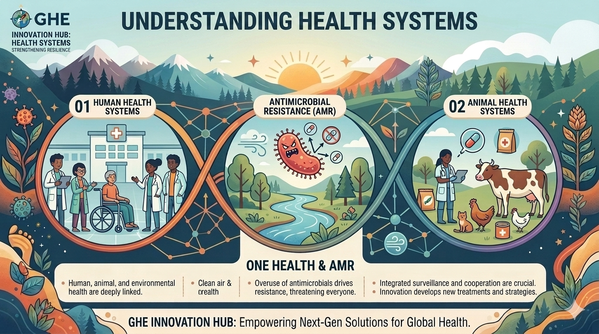

Understand
Learn how the system works, who shapes it and what structures influence health.
Understand the systems that shape health. Imagine how they could work better.
Explore how health systems connect with people, communities, technology, climate, animals and the environment — and learn how systems thinking can help us imagine better futures.

Innovation is not simply having a new idea. It begins by understanding a system, questioning assumptions, connecting perspectives, imagining alternatives and reflecting on consequences.
Learn how the system works, who shapes it and what structures influence health.
Examine evidence, perspectives and connections across health, society and the environment.
Challenge assumptions and identify gaps, tensions, inequities and opportunities.
Bring together disciplines, communities, data and institutions that influence the challenge.
Envision alternative ways a system, service, place or relationship could work.
Develop a conceptual, evidence-informed mini-proposal that makes your thinking explicit.
Consider equity, risks, feasibility, sustainability, uncertainty and what you would need to learn next.
A health system is more than hospitals and clinics. Explore seven interconnected areas that help us understand how health services are organized, supported and experienced.
How health services are organized, accessed and delivered to people and communities.
The people whose knowledge, skills and relationships make health systems function.
The data, technologies and processes used to understand health and inform decisions.
The medicines, devices and technologies that support prevention, diagnosis, treatment and care.
How resources are raised, pooled and allocated to support health services and population health.
The structures, decisions and relationships that guide health systems.
The participation, knowledge and lived experience of people and communities.
These building blocks do not operate independently. A workforce shortage can affect service delivery. Financing can affect workforce capacity. Information can influence governance. Community engagement can change priorities. Innovation happens in the relationships between the blocks as much as within them.
The conditions that shape human health extend far beyond health services. Climate, air, water, food, biodiversity and the environments where people live all interact with health systems and health outcomes.
Explore how a changing climate affects exposure, vulnerability and health-system demand.
Connect to climate & health →Examine air pollution as an environmental determinant of health and an urban challenge.
Connect to healthy cities →Explore water, sanitation and hygiene as foundations for health, dignity and resilience.
Explore WHO WASH ↗Investigate how food systems connect nutrition, livelihoods, climate and environmental health.
Explore FAO One Health ↗Consider the relationships among ecosystems, biodiversity and human wellbeing.
Explore biodiversity & health ↗Connect the physical environment with health, inequality and opportunities for prevention.
Explore WHO environment & health ↗One Health recognizes that human, animal, plant and ecosystem health are interconnected. It encourages us to look across disciplinary and institutional boundaries.
Explore WHO One Health ↗Climate change creates new pressures on people, communities and health systems. Innovation can help us anticipate risks, strengthen resilience and identify health co-benefits.
How could communities anticipate and respond to increasing heat risk?
How might environmental change alter patterns of disease and health-system demand?
What happens to essential services during floods, storms, fires or other disruptions?
What characteristics could make health facilities more resilient and sustainable?
How can information become timely, understandable and actionable for communities?
Imagine a community receiving an early warning about extreme heat. What information, people, services and decisions would need to connect for that warning to become meaningful action?
Cities are health systems too. Urban design, transport, housing, green space and environmental conditions influence exposure, opportunity, wellbeing and resilience.
Resilience is the capacity to anticipate disruption, absorb shocks, maintain essential functions, adapt and learn. Explore resilience as a property of systems, organizations and communities.
Preparedness, surveillance, communication and learning.
Maintaining essential health functions during disruption.
Understanding dependencies, bottlenecks and redundancy.
Physical and digital systems that support continuity.
The relationships, knowledge and capacities communities can draw upon during change.
Use this pathway to move from curiosity to a structured, evidence-informed conceptual proposal.
Identify the system, its boundaries, actors, structures and relationships.
Examine credible evidence, data, lived experience and different perspectives.
Challenge assumptions and identify what could be understood differently.
Map related systems, stakeholders, environments, incentives and dependencies.
Generate alternative futures before deciding which direction is most promising.
Turn your reasoning into a conceptual proposal without pretending to provide professional implementation advice.
Consider equity, risk, feasibility, sustainability, unintended consequences and uncertainty.
Choose a challenge and use the GHE canvas to develop a conceptual proposal. Your proposal should show how you think about a system — not provide instructions for professional implementation.
Use these organizations to move beyond introductory learning and explore evidence, data, policy, research and global health practice.
Use the Data & Digital Innovation world to explore how data can help describe burden, identify patterns, investigate inequalities and support evidence-informed questions.
These questions are designed to check understanding, not professional expertise.
Correct: B. Health systems include interconnected people, institutions, resources, policies and processes that contribute to health and health care.
Correct: B. One Health encourages integrated thinking across human, animal, plant and ecosystem health.
Correct: C. Systems thinking looks at relationships, dependencies and interactions rather than treating a problem as an isolated event.
Correct: C. The proposal is a conceptual educational exercise designed to make systems reasoning visible.
Innovation can create benefits, but it can also create new risks, exclusions or unintended consequences. Responsible innovation asks learners to think beyond novelty and consider the people and systems affected.
Connect the questions you develop here with the Global Health Burden & Data Commons ecosystem. Explore how data can help describe health challenges, compare patterns and ask better questions.
Health-system innovation connects to biomedical discovery, data and digital technologies, and the social and human dimensions of health.
“What could health look like if we understood the systems around it — and imagined them differently?”